악녀라서 편하고 좋은데요? 같은 웹툰 추천

악녀라서 편하고 좋은데요? · 수달 / 요테 / 망고킴
악녀라서 편하고 좋은데요? 재밌게 봤다면 이 웹툰들도 좋아할 거예요. 같은 장르이면서 빙의, 사이다, 로판 같은 요소가 겹치는 작품을, 겹치는 요소가 많은 순서로 20개 골랐어요.
2026-10-08 기준 · 네이버웹툰·카카오웹툰·레진코믹스 · 성인 작품 제외
내 취향으로 직접 골라 추천받기 →-
1
 카카오웹툰
카카오웹툰빙의자를 위한 특혜
※사후 세계를 대비하세요! 죽기 직전에 받은 이상한 스팸문자. 죽은 줄 알고 눈떠보니 빙의심사국이다. 정말 사후 세계가 있다고? 책 속으로 빙의될 거라고? "특별히 선호하는 장르가 있으신가요?" 전생에 덕질로 모든 장르를 섭렵한 나.…
빙의사이다로판로맨스카카오웹툰에서 보기 → · 빙의자를 위한 특혜 같은 웹툰 → -
2
 카카오웹툰
카카오웹툰악녀는 오늘도 즐겁다
남친을 빼앗아간 친구가 웃으며 청첩장을? 하! 시원하게 사이다를 날려주고 돌아와 잠들었는데… 깨어나니 미모, 재산, 지능 모든 걸 다 갖춘 로판 속 악녀로 빙의했다. 언니한테 부족한 건 남자 보는 눈뿐이에요. 쓰레기 같은 황태자는 여주 한테 버려버리…
빙의사이다로판로맨스카카오웹툰에서 보기 → · 악녀는 오늘도 즐겁다 같은 웹툰 → -
3
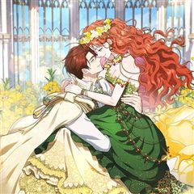
카카오웹툰망할 가문을 살려보겠습니다
구성작가로 치열하게 살아가던 나 지연우는 비명횡사 후 동료작가가 재미로 쓴 소설 [오시리아 연대기]에 빙의하고 만다. 그것도 몇 장 나오지 않았던 엘리어스 가문의 다섯째 딸, 고도비만 준 히키코모리 영애인 태라 엘리어스로. 산넘어 산이라고 이 가문은…
빙의사이다로판로맨스카카오웹툰에서 보기 → -
4
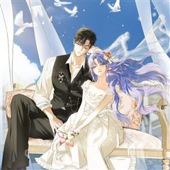
카카오웹툰엑스트라에게 남주들을 빼앗겼다
원작에 등장하지도 않은 엑스트라에게 남주들을 빼앗긴 여주… 그게 바로 나다. 마왕을 무찌르고 돌아오는 길에 혼수상태에 빠진 셀로니아. 몇 달 동안 사경을 헤매다 살아났건만, 뭐? “파혼해 주었으면 해. 그레이스와의 결혼을 서두르고 싶거든.” “기사의…
빙의사이다로판로맨스카카오웹툰에서 보기 → -
5
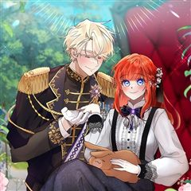
카카오웹툰실수로 남주의 동생을 꼬셔버렸다
“싫어요.” 내연 관계가 되자는 똥차의 제안을 단칼에 거절했다. “공자님은 제 취향이 아니에요. 제 취향은, 공자님의 동생분이랍니다.” “뭐? 내 동생이 취향이라고?” 그래. 너 말고 네 동생. * * * 그 ‘동생’이 퇴폐미가 줄줄 흐르는 짐승이…
빙의사이다로판로맨스카카오웹툰에서 보기 → -
6카카오웹툰
피오니-살인귀 대공과의 미래를 보았다
착한 척, 연약한 척, 불쌍한 척. 독자에게 빡침 3종 콤보를 달성하는 빙썅 악녀 가브리엘라 나시렛에 빙의했다. 예정된 죽음에서 벗어나기 위해 원작과 관련 없는 남자, 북부 대공 에른스트 에퀘스에게 계약 결혼을 청했다. 그렇게 원작의 사건이 일어나는…
빙의사이다로판로맨스카카오웹툰에서 보기 → -
7
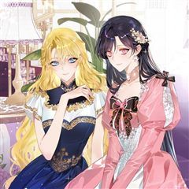
카카오웹툰악녀님의 최애로 간택된 사정
“세계관 최고 부자이자 권력가인 악녀님의 최애가 되어버렸다…?” 원작 여주의 들러리 역할인 조연 ‘라리트’에게 빙의했다. 더 이상 여주 셔틀로 살고 싶지 않았던 나는 세계관 최고의 부자이자 권력가인 악녀, 에반젤린에게 갈아타기로 결심했다. 그런데 이…
빙의사이다로판로맨스카카오웹툰에서 보기 → -
8카카오웹툰
엔딩 후 악역을 돈으로 구원했습니다
왕국의 모든 돈은 그녀를 통하고, 그녀가 손댄 사업에는 금길이 놓인다. 세상에 돈으로 안 되는 것은 없지. 이를 테면…… “반역자 테리오사를 제게 파세요.” 대륙 최고의 검사, 일등 미남. 하지만 지금은 반역자에 불과한 반쪽짜리 왕자, 셀레스티안 테…
빙의사이다로판로맨스카카오웹툰에서 보기 → -
9네이버웹툰
두 번 빼앗긴 남편
피폐 소설 속 주인공 '로제'로 빙의했다, 그것도 내 남편을 빼앗은 절친과 함께. 그리고 변함없이 또 남편을 빼앗으려고 하는데. "마음껏 탐해 주렴. 이제 과거처럼 당하고만 있진 않을 테니까." 피폐 소설 남주를 절친에게 버리고 도망치려 한다.
빙의사이다로판로맨스네이버웹툰에서 보기 → -
10
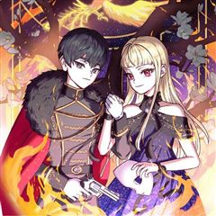
카카오웹툰흑막의 말년운이 좋다
사람의 얼굴과 탄생 정보로 운명을 알 수 있는 박도아는 죽음을 맞이한 후 자신과 닮은 운명의 소녀 바니로 빙의한다. '사주 명리와 관상. 내가 여태 배운 것들이 의미가 없지는 않겠지.' 크레델가 대공녀 오필리아의 액막이로 들어와 구박 받는 쓰레기장…
빙의사이다로판로맨스카카오웹툰에서 보기 → -
11
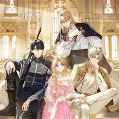
카카오웹툰힘을 숨겨도 공녀가 제일 강함
제국의 수호자, ‘영웅’. 강산이 수없이 변하는 긴긴 시간, 영웅은 늘 황실의 명에 따라 제국을 지켰다. 마땅한 이름은 없었다. 사람들은 영웅이 실존하는지조차 제대로 알지 못했으므로, 명예도 칭송도 없었다. 영웅은 황실에 목줄 잡힌 개였다. 광룡 봉…
빙의사이다로판로맨스카카오웹툰에서 보기 → -
12카카오웹툰
셀럽 레이디
*셀럽: ‘유명인’을 뜻하는 셀러브리티 Celebrity의 줄임말 이 시대를 아우르는 화제의 셀럽, 줄리엣 카레니나! 어느 날, 이 세계 공녀의 몸에서 눈을 뜨는데...! "뭐, 뭐야 여긴?" 둔한 몸, 소심하고 착해빠진 성격. 루베트리아 디올러스의…
빙의사이다로판로맨스카카오웹툰에서 보기 → -
13카카오웹툰
그 쓰레기가 나였어요
역하렘 연애 육성 게임에 빙의했다. 온갖 악행을 저지르다 처단당하는 악녀, F-등급의 튤리아 프레지어로. “이렇게 끔찍한 스탯으로 살아남는 게 가능해?” “이 건방진 말투는 뭐야?!” 돈도 없고 운도 없고 모두에게 미움받으며, 아무도 날 사랑하지 않…
빙의사이다로판로맨스카카오웹툰에서 보기 → -
14
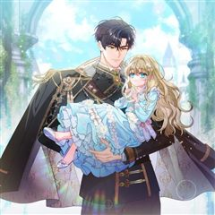
카카오웹툰죽어 줘, 라는 말을 들었다
죽어 줘, 라는 말을 들었다. 10년을 함께한 동료들로부터. “미안하다, 린. 세계를 위해 네가 대신 죽어다오.” 그렇게, 모든 것이 끝났다고 느꼈을 때. ‘...응?’ 린은 다시 눈을 떴다. 무려 30년이나 지나, 신의 사도라 불리는 투슬레나 대가…
빙의사이다로판로맨스카카오웹툰에서 보기 → -
15카카오웹툰
K-장녀가 육아물에 빙의하면
이 세계가 전생에 내가 읽었던 바로 그 소설 속이라는 걸 깨달았다. 원작에서는 내 위치의 인물이 북부 공작가의 ‘장남’이자 당당한 후계자였는데, 웬일인지 지금의 나는 ‘장녀’로 살아가고 있다. 심지어 부모님은 나보다 내 남동생만 감싸고, 후계자 자리…
빙의사이다로판로맨스카카오웹툰에서 보기 → -
16
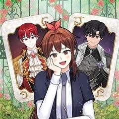
카카오웹툰미연시는 1회차로 족하다
어느 날 연애 시뮬레이션 게임 여주인공, 데보라가 되었다. 해피 엔딩을 보면 원래 세계로 돌려보내 준다길래 좋아하지도 않는 남주들 비위를 맞춰 겨우 고백을 받았건만……. [Normal Ending 달성!] '뭐? 노말 엔딩? 여성향 게임의 해피 엔딩…
빙의사이다로판로맨스카카오웹툰에서 보기 → -
17
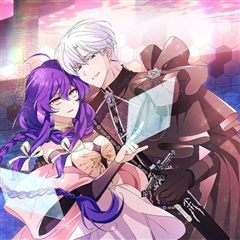
카카오웹툰악역이지만 편애받고 있습니다
'X 같은 세상, 망해라!' 과로로 죽어가며 한 마디. 이대로 세상을 떠날 줄 알았는데, 플레이하던 게임에 빙의했다. 불행인지 다행인지 전생의 개고생에 대한 보상으로 사람과 사물의 정보를 보는 특수한 능력을 갖게 됐다. 능력을 이용해 편안하고 여유로…
빙의사이다로판로맨스카카오웹툰에서 보기 → -
18
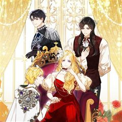
카카오웹툰악녀 부활 24시
온 제국의 웃음거리, 반푼이 영애 에르네의 몸에 빙의한 희대의 악녀 에르콰나. 그런 그녀의 눈앞에 이상한 미션창까지 떠오르는데. [미션] 진실한 사랑을 찾으세요! [달성 조건] 지상 최강의 이성과 사랑에 빠져 각인을 맺기 [페널티] 제물의 영혼 회수…
빙의사이다로판로맨스카카오웹툰에서 보기 → -
19
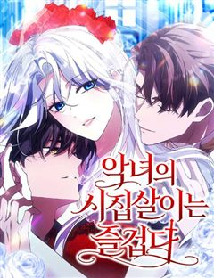
네이버웹툰악녀의 시집살이는 즐겁다
사랑 하나만 믿고 시댁살이를 견딘 ‘에시카’. 그러나 남편은 자신의 친구와 부정을 저지르고, 큰 사고까지 당하는 과정에서 전생의 기억을 떠올린다. 그녀는 바로 악녀 ‘천영령’이었고, 이곳은 책속 세상이었다는 것. 자신의 전생과 자신을 괴롭힌 사람들과…
빙의사이다로판로맨스네이버웹툰에서 보기 → -
20
 카카오웹툰
카카오웹툰남편을 내 편으로 만드는 방법
판타지 소설 속 남편의 손에 죽는 악역 조연, ‘루드베키아’가 되었다. 이 세계의 망할 아버지는 내 정략결혼 상대를 또 물어왔다. 문제는 그 상대가 바로 날 죽이게 될 남편이라는 것! 일단은 살길을 찾아야 한다. 북부 사람들에게 최대한 무해하게 보이…
빙의로판로맨스카카오웹툰에서 보기 → · 남편을 내 편으로 만드는 방법 같은 웹툰 →